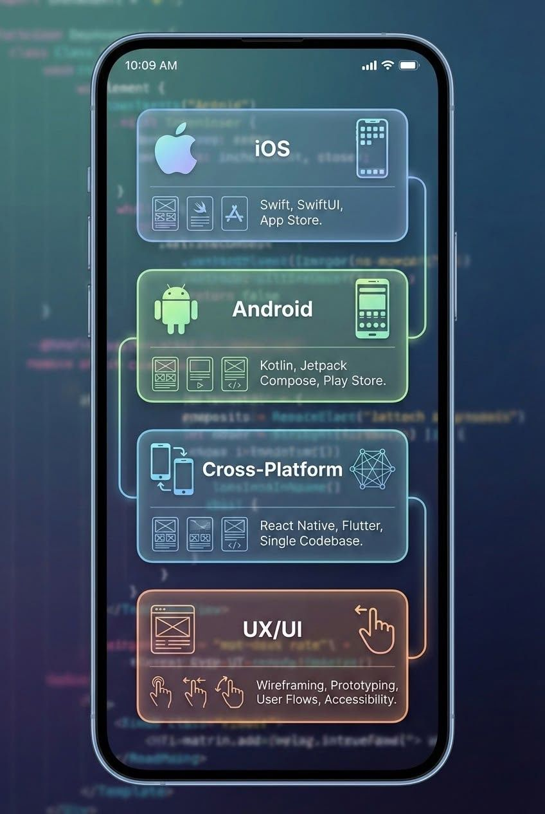

I'm Merab Darlene Nyokabi,
an Information Security enthusiast
passionate about understanding,
building and protecting technology.
I explore cybersecurity, digital forensics,
ethical hacking, network security and
technology development — always curious
about how things work and how they can
be made safer.
01
My Skills
A few areas I'm exploring, building in
and continuously developing.
01
WEB DEVELOPMENT
Turning ideas into
digital experiences.
I enjoy creating responsive and
user-friendly websites, from
structuring pages to bringing
interfaces to life with HTML,
CSS and JavaScript.
HTML · CSS · JavaScript
02
CYBERSECURITY
Understanding threats
to build safer systems.
I'm interested in understanding
how systems and networks can be
attacked, identifying vulnerabilities
and exploring ways to improve
security.
Security · Vulnerability Assessment · Awareness
03
DIGITAL FORENSICS
Finding the story
hidden in digital evidence.
I'm interested in collecting,
preserving and analysing digital
evidence to understand what happened
during a security incident.
Evidence · Investigation · Analysis
04
NETWORKING & NETWORK SECURITY
Understanding how
everything connects.
I'm developing my understanding of
how devices communicate, how network
traffic can be analysed and how
networks can be secured.
Networking · Packet Analysis · Security

05
APPLICATION DEVELOPMENT
Building applications
while learning how they work.
I explore application development
through programming and practical
projects while learning how
functionality and security come
together.
Java · Kotlin · Python
ONE THING I'VE BUILT
IoT Network
Vulnerability Scanner.
A security-focused tool designed to scan IoT networks,
identify potential vulnerabilities, simulate attacks,
and support forensic evidence collection.
Growing up in Kenya,
I never imagined technology
would become such a big part
of my life.
In high school, I studied IT and
experimented with coding. At the
time, it was mostly something I did
out of curiosity and for fun.
I didn't see it as the beginning
of a career. I was actually more
interested in business and had a
completely different picture of
what my future might look like.
02 — THE CHOICE
Then came the question:
what's next?
After finishing high school,
it was time to choose a direction
for university.
I found myself looking between
business and IT, trying to understand
what each path could offer me.
I started researching, asking
questions and speaking to people
around me. My dad encouraged me
to look into Information Security
and Forensics.
03 — DISCOVERY
Finding Information
Security & Forensics.
The more I researched the field,
the more I became interested in
what was behind it — cybersecurity,
digital investigations, networks,
ethical hacking, evidence collection
and understanding how technology
can be protected.
I applied to KCA University and began
my journey in Information Security
and Forensics.
04 — LEARNING BY DOING
I found a field
I actually enjoyed.
University introduced me to a much
bigger world of technology.
From programming and application
development to networking, information
security and digital forensics, every
new subject gave me another reason
to explore.
Over time, I realised that I didn't
have to choose just one part of IT.
I enjoy understanding how systems
work, how they can be attacked,
how incidents can be investigated
and how technology can be made safer.
05 — WHERE I AM NOW
Still learning.
Still building.
Today, I'm continuing to develop
my skills through university,
certifications, research and
practical projects.
I'm particularly interested in
cybersecurity, digital forensics,
ethical hacking, network security
and incident response.
I'm also exploring development
because understanding how technology
is built is just as important as
understanding how to protect it.
One of my projects is an IoT Network
Vulnerability Scanner that scans
IoT networks for vulnerabilities,
stimulates attacks and collects
forensic evidence.
THE LITTLE THINGS
A few moments along the way.
Some things don't need a story. They just need to be remembered.
Becoming.
Moments I keep.
Good days.
In my element.
Just me.
A little joy.
DRAG TO EXPLORE ↓
MY MISSION
Keep learning.
Keep building.
Make technology safer.
My goal is to use technology to
empower people, promote safer
digital practices and continuously
develop the knowledge needed to
understand, investigate and protect
digital environments.
Want to know more about my
experience and qualifications?